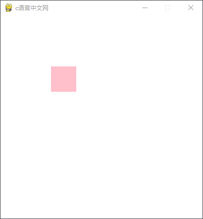
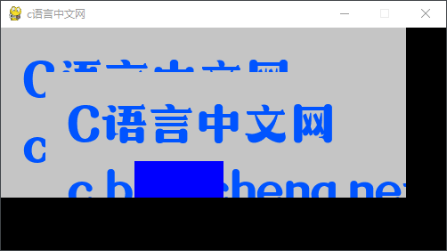

Pygame Surface创建图像
通过前面内容的介绍，我们对 Surface 对象有了大体上的认识。Pygame 针对文本、图像、颜色提供了不同模块来生成它们各自的 Surface 对象。Surface 模块是Pygame 中专门用来新建图像的，通过该模块可以创建一个 Surface 对象，语法格式如下：
下面看一组简单的使用示例，如下所示：
从上述运行结果可以看出，通过 Surface 模块，我们成功的在主屏幕上绘制一个 50 * 50 的矩形区域。注意，如果不设置尺寸，Surface 默认创建一个和主游戏屏幕同样大小的区域。
Surface 模块还提供了处理图像的其他方法，下表对它们做了简单的介绍。
除了使用 Surface 模块新建图像外，我们还可以使用另外一种方法从外部加载图像，如下所示：
Surface=pygame.Surface(size=(width,height),flags,depth)参数函数如下：
- size：表示 Surface 对象的矩形区域大小；
- flags：功能标志位，有两个可选参数值 HWSURFACE 和 SPCALPHA，前者代表将创建的 Surface 对象存放于显存中，后者表示让图像的每一个像素都包含一个 alpha 通道
- depth：指定像素的颜色深度，默认为自适应模式，由 Pygame 自动调节。
下面看一组简单的使用示例，如下所示：
import sys
import pygame
#使用pygame之前必须初始化
pygame.init()
#设置主屏窗口 ；设置全屏格式：flags=pygame.FULLSCREEN
screen = pygame.display.set_mode((400,400))
#设置窗口标题
pygame.display.set_caption('c语言中文网')
screen.fill('white')
#创建一个 50*50 的图像,并优化显示
face = pygame.Surface((50,50),flags=pygame.HWSURFACE)
#填充颜色
face.fill(color='pink')
while True:
# 循环获取事件，监听事件
for event in pygame.event.get():
# 判断用户是否点了关闭按钮
if event.type == pygame.QUIT:
#卸载所有模块
pygame.quit()
#终止程序
sys.exit()
# 将绘制的图像添加到主屏幕上，(100,100)是位置坐标，显示屏的左上角为坐标系的(0,0)原点
screen.blit(face, (100, 100))
pygame.display.flip() #更新屏幕内容
最终的显示结果如下：

图1：程序运行结果
图1：程序运行结果
从上述运行结果可以看出，通过 Surface 模块，我们成功的在主屏幕上绘制一个 50 * 50 的矩形区域。注意，如果不设置尺寸，Surface 默认创建一个和主游戏屏幕同样大小的区域。
Surface 模块还提供了处理图像的其他方法，下表对它们做了简单的介绍。
| 方法 | 说明 |
|---|---|
| pygame.Surface.blit() | 将一个图像（Surface 对象）绘制到另一个图像上 |
| pygame.Surface.convert() | 修改图像（Surface 对象）的像素格式 |
| pygame.Surface.fill() | 使用纯色填充 Surface 对象 |
| pygame.Surface.scroll() | 复制并移动 Surface 对象 |
| pygame.Surface.set_alpha() | 设置整个图像的透明度 |
| pygame.Surface.get_at() | 获取一个像素的颜色值 |
| pygame.Surface.set_at() | 设置一个像素的颜色值 |
| pygame.Surface.get_palette() | 获取 Surface 对象 8 位索引的调色板 |
| pygame.Surface.map_rgb() | 将一个 RGBA 颜色转换为映射的颜色值 |
| pygame.Surface.set_clip() | 设置该 Surface 对象的当前剪切区域 |
| pygame.Surface.subsurface() | 根据父对象创建一个新的子 Surface 对象 |
| pygame.Surface.get_offset() | 获取子 Surface 对象在父对象中的偏移位置 |
| pygame.Surface.get_size() | 获取 Surface 对象的尺寸 |
除了使用 Surface 模块新建图像外，我们还可以使用另外一种方法从外部加载图像，如下所示：
pygame.image.load("图片路径").convert()
上述方法将被加载的图像作为 Surface 对象来使用，因此它可以调用上述表格中所有方法。注意，此处之所以使用 convert(）来转换被加载图片的像素格式，是为了提升 Pygame 对图片的处理速度，该操作能够保证图像的像素格式与图片的显示格式是相同的。
通过 image.load() 方法可以加载游戏的背景图，或者游戏中使用的其他元素，比如的人物、道具等等。
下面看一组简单的示例：
import pygame
#引入pygame中所有常量，比如 QUIT
from pygame.locals import *
pygame.init()
screen = pygame.display.set_mode((500,250))
pygame.display.set_caption('c语言中文网')
#加载一张图片
image_surface = pygame.image.load("C:/Users/Administrator/Desktop/c-net.png").convert()
# rect(left,top,width,height)指定图片上某个区域
# special_flags功能标志位,指定颜色混合模式，默认为 0 表示用纯色填充
image_surface.fill((0,0,255),rect=(100,100,100,50),special_flags=0)
# 200,100 表示图像在水平、垂直方向上的偏移量，以左上角为坐标原点
image_surface.scroll(100,50)
# 无限循环，让窗口停留
while True:
for event in pygame.event.get():
if event.type == QUIT:
exit()
# 将图像放置在主屏幕上
screen.blit(image_surface,(0,0))
pygame.display.update()
程序运行结果如下所示：

图2：程序运行结果
图2：程序运行结果
关注公众号「站长严长生」，在手机上阅读所有教程，随时随地都能学习。内含一款搜索神器，免费下载全网书籍和视频。

微信扫码关注公众号